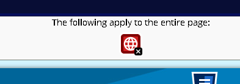
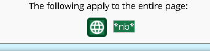
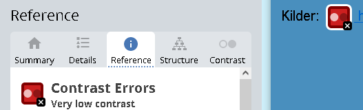
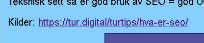
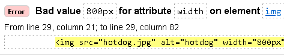
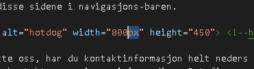

Analyse
På denne siden skal jeg fortelle om analysen av nettsiden i en tabell som viser noen endringer som jeg har gjort i form av før-og-etter screenshots og litt info om hver av de.
Før
Etter
Info


Her fikk jeg i Wave og W3C at jeg ikke har skrevet noe lang i html. Jeg skrev derfor lang="nb" i alle html-sidene.


Her var det et problem med kontrasten, så jeg byttet bakgrunnsfargen i main på alle sidene sånn at klikkbare linker er lettere
å se.


Til slutt var det et problem med bildet på første side. "Width" var devinert med "800px" i html dokumentet istedenfor
bare "800", så jeg gikk inn i dokumentet og endret på det.
Under er det lagt til en lastnedbar Excel fil med WCAG sin skjekkliste for utfylling av tilgjengelighetserklæring.